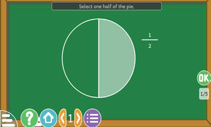
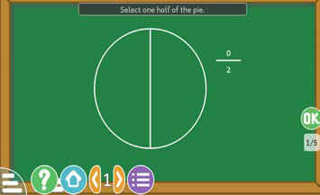

Tujifunze sehemu kwa kutumia TEHAMA
Tunaweza kutambua sehemu kwa kutumia TEHAMA.
Mfano
Njia
Tumia kitumizi kilichounganishwa kwenye https://tie.go.tz/pages/download-software kutambua sehemu.


Hatua
1.
Fungua kitumizi cha kutambua sehemu.
2.
Soma swali linaloonekana kwenye skirini na ulielewe.
3.
Andika jibu kwa kuweka kivuli kwenye duara kuonesha sehemu ya kitu.
4.
Bonyeza OK kuhakiki jibu lako.
5.
Endelea na mazoezi mengine ili kuimarisha ujuzi wa kutambua sehemu.